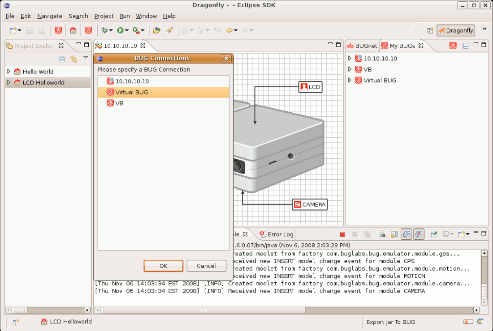

Send Application to BUG
- In the Project Explorer, right-click the application and select Send to BUG.
- Turn your BUG on and connect it to your computer.
- Right click on the application in the Project Explorer pane.
- Select Send to BUG.
- One BUG Connection in My BUGs: The application is now available on it.
- Mulitple BUG Connections in My BUGs: you will have to select one from the BUG Connections pop up window and click OK. The application is now available on your choice.
